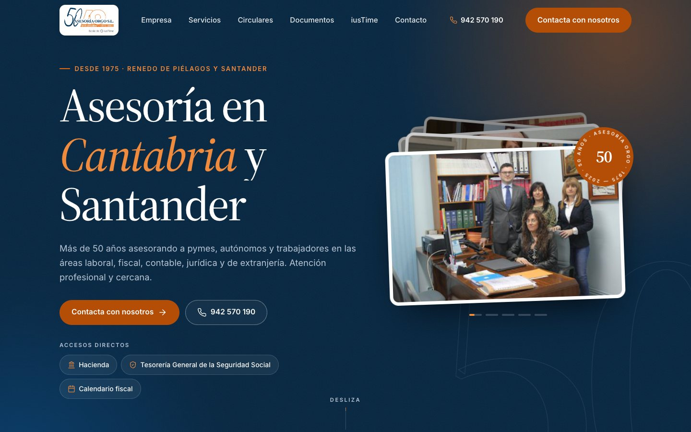
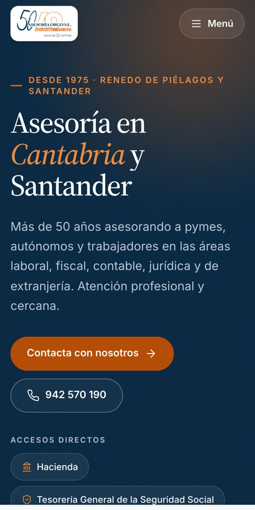
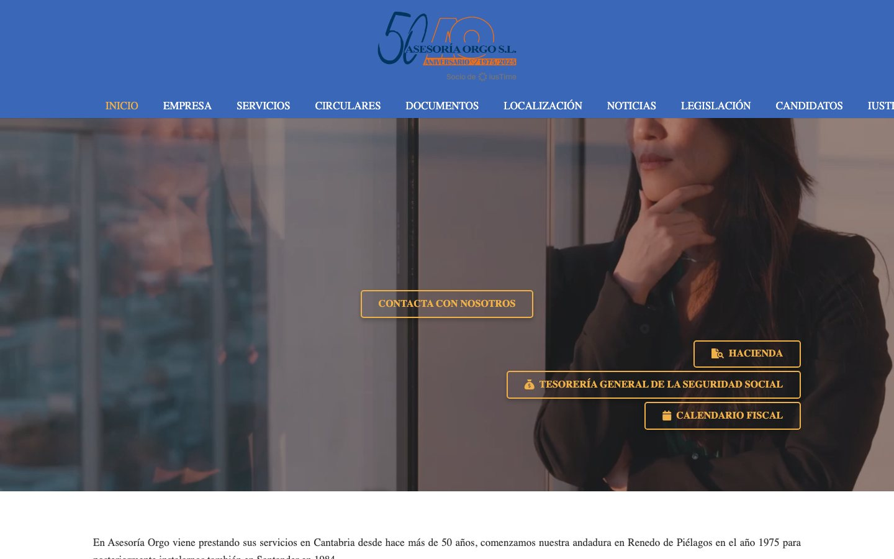

Diseño renovado
Nueva imagen para todas las páginas, con vuestros colores, una tipografía clara y animaciones suaves que dan vida a la web.
Lo que acabáis de ver es una demo hecha con vuestros propios textos, fotos y datos. Así podría verse asesoriaorgo.es renovada: más clara, pensada para el móvil y con lo importante a la vista.


Vuestra web actual lleva funcionando desde 2021 y ha cumplido su función. Desde entonces han cambiado vuestro logo, vuestras circulares y la forma de buscar una asesoría: hoy, sobre todo, desde el móvil. Esta renovación la pone al día sin empezar de cero.

Teléfonos, oficinas y horarios a un toque, con una barra fija para llamar a Renedo o a Santander.
Pasamos de 10 entradas a 6. Ninguna página desaparece: Noticias, Legislación y Candidatos siguen a mano desde el pie.
Los mismos textos de siempre, ordenados en bloques, listas y apartados en lugar de párrafos interminables.
50 años, la primera ISO 9001 de Cantabria, ANF AC, Firma Profesional e iusTime, desde la portada.
Las circulares más recientes aparecen en el inicio, para que se vea que la asesoría está al día.
Los 50 años de la asesoría se recorren al hacer scroll, año a año, de 1975 a 2025. Es lo primero que se recuerda de la web.
Nueva imagen para todas las páginas, con vuestros colores, una tipografía clara y animaciones suaves que dan vida a la web.
Se ve y funciona bien en móvil, tablet y ordenador.
Partimos de los textos, documentos y circulares que ya tenéis. No hace falta que preparéis nada nuevo.
Cada página conserva su dirección y sus textos, y gana algo que hoy no tiene: títulos bien marcados para que Google entienda de qué trata.
Formulario, llamada y cómo llegar a cada oficina, siempre a mano.
Seguiréis publicando circulares y documentos desde el mismo WordPress de siempre.
La renovación cubre todas las páginas de la web. Ninguna se elimina ni cambia de dirección.
Portada nueva: historia animada de 1975 a 2025, áreas, conexión con la Administración, circulares y oficinas. Ver en la demo
Historia en línea de tiempo, acreditaciones y fotos del equipo.
Las cuatro áreas por apartados, con todo el detalle actual. Ver en la demo
Listado por años, de la más reciente a la más antigua.
Fichas de contratos descargables.
Las dos oficinas con horarios, aviso de «abierto ahora», cómo llegar y formulario.
La red y sus cifras.
Pasa al pie de página. La última noticia publicada es de 2021.
Pasa al pie de página. La última actualización es de julio de 2020.
Pasa al pie de página, junto a la información de la asesoría.
Aviso legal, privacidad y cookies, con el mismo contenido.
No forman parte de la renovación. Os las dejamos anotadas por si os interesan ahora o más adelante.
Las fotos actuales tienen unos años y poca resolución. Unas fotos nuevas del equipo y de las dos oficinas le darían otro nivel a la web.
Presupuesto a medidaVolver a dar vida a estas secciones con publicaciones periódicas, o unificarlas con las circulares.
Presupuesto a medidaFichas de Google de las dos oficinas revisadas, para aparecer cuando buscan una asesoría en Santander o en Piélagos.
Presupuesto a medidaNos confirmáis la propuesta y cualquier ajuste que queráis hacer.
Revisamos con vosotros horarios, teléfonos y fotos para que todo esté al día.
Trabajamos sobre una copia: vuestra web actual sigue funcionando mientras tanto.
Revisamos cada página en móvil y ordenador y la publicamos con las mismas direcciones.
Responded al mensaje con el que os llegó esta propuesta y os contamos los detalles, sin compromiso.